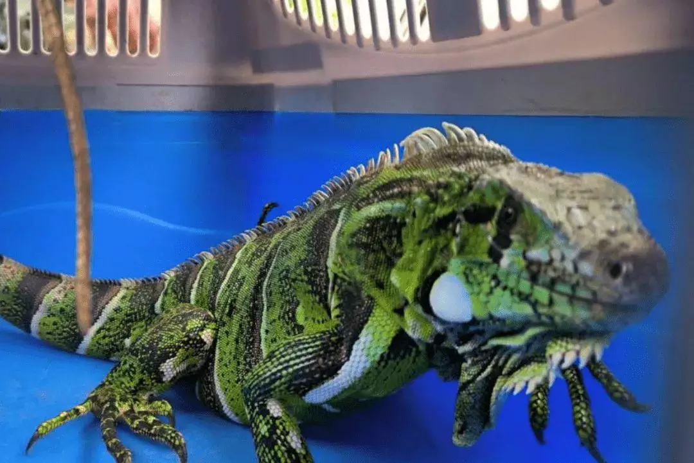
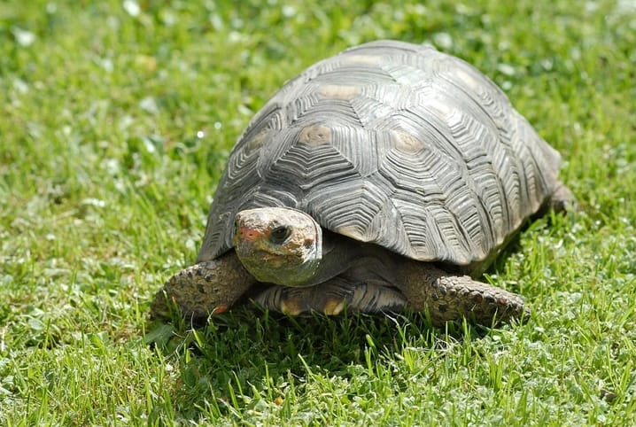

Animais precisando de ajuda

Cão encontrado no Centro
Status: Precisando de Resgate
Visto pela última vez perto da praça da bandeira.

Gato filhote no bairro do catolé
Status: Em Lar Temporário
Resgatado pela Maria. Contato: (88) 55555-4442

Iguana no bairro da liberdade
Status: Em Lar Temporário
Resgatado por Paulo. Contato: (55) 42323-4332

Jabuti
Status: Precisando de Resgate
Visto pela última no parque da criança perto da entrada principal.
⚠️ Nota: Para garantir informações atualizadas, os alertas expiram automaticamente após 7 dias.